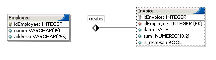
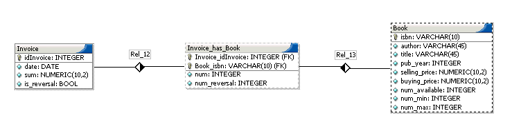

As we already explained in the last section the basic working unit in the SWF-model is a view which basically represents a table. Aside from views, there are also groups. One or more views make up a group. Groups are the other conceptual element in the SWF. They are nothing else then a container for views so that you can group together views that share a common characteristic.
Following now is a detailed explanation of the joins that are (implicitly) possible in a view.:
Example 1-1. Performing a lookup-join
Consider a simple database as it is depicted in the figure below.

We have a table named Invoice that has an attribute idEmployee(of type Integer). idEmployee specifies the employee, so it actually is a foreign key which references a data record of the Employee table. In the Employee-table we save the name and the address for each idEmployee. In most situations you would like to see the name of the employee on an invoice and not a number identifying him, so you would perform a join of these two tables. Such simple joins are allowed by the SWF within the view-framework.
So what is a lookup-join now more formally? . A lookup-join is a normal equi-join between 2 tables. We call it lookup-join because most of the time we have an id (e.g. idEmployee) like an integer value 3 in a record(eg. invoice) and we want to look up the value 3.
Since the DBDesigner4's visual model of a database is in some aspects similar to an EER-diagram of a database, I also want to explain the meaning of a lookup-join in an EER-context. Entities in the EER- model (which map to tables in DBD4's model) that have a 1:1 or 1:n relationship can be combined by a lookup-join.
So if you have chosen the Main-Table of a view, you are presented a list of so called Lookup-Tables. A Lookup-Table is a table that is referenced by the Main-Table. In other words the Main-Table has a foreign key belonging to the Lookup-Table. Out of these list of lookup-Tables you can choose which tables you want to have joined. But this will be explained in more detail in a later section.
Example 1-2. Performing an NM-Table-join
Consider a simple database as it is depicted in the figure below.

NM-relationships of the well-known (E)ER-diagram describe relations where one instance can have references to many instances of another entity and vice versa. The SWF tries to remodel that relationship back from the table-layer. For example an invoice could have references to all the books that the customer just bought.